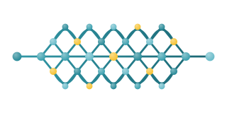

MIMIQ TensorWeaver¶

A Matrix Product State (MPS) quantum circuit simulator for MIMIQ.
part of MIMIQ, by

TensorWeaver simulates quantum circuits by representing the state as a Matrix Product State rather than a dense state vector. The bond dimension χ is a single controllable trade-off between accuracy and cost: circuits with limited entanglement run well past the reach of state-vector simulation, and you decide how much approximation to accept.
It plugs into MIMIQ. You
build circuits with mimiqcircuits, run them with tensorweaver.execute, and
receive the same QCSResults object MIMIQ uses elsewhere.
New to tensor networks? Start with Concepts, which explains MPS, bond dimension, and truncation from the beginning.
Quick start¶
from mimiqcircuits import Circuit, GateH, GateCX, BitString
from tensorweaver import execute
# A Bell-state circuit.
c = Circuit()
c.push(GateH(), 0)
c.push(GateCX(), 0, 1)
results = execute(c, nsamples=1000, bonddim=64)
print(results.histogram()) # {bs"00": 511, bs"11": 489}
print(f"Fidelity: {results.fidelities[0]:.6f}")
# Ask for specific amplitudes.
bs00, bs11 = BitString([0, 0]), BitString([1, 1])
results = execute(c, nsamples=100, bonddim=64, bitstrings=[bs00, bs11])
print(f"⟨00|ψ⟩ = {results.amplitudes[bs00]}")
print(f"⟨11|ψ⟩ = {results.amplitudes[bs11]}")
Features¶
- Matrix Product State core written in Rust, exposed through PyO3.
- MIMIQ circuits decomposed automatically to TensorWeaver's native gate set.
- Multi-controlled gates applied directly, without a CX decomposition.
- Mid-circuit measurement, reset, and classically conditioned operations.
- Noise simulation via Kraus and mixed-unitary channels, sampled as trajectories.
- Observables read from the state: amplitudes, expectation values, bond dimension, Schmidt rank, entanglement entropy.
- Qubit reordering to lower the bond dimension of long-range circuits.
- Qudits: sites of any physical dimension
d ≥ 2on the low-level MPS/MPO API. - Two BLAS engines selectable per simulator at runtime with
usemkl: OpenBLAS (vendored) and Intel MKL. Left unset it takes whichever engine the wheel for this platform carries. - Qiskit interoperability through an optional extra.
- Results returned as MIMIQ
QCSResults: samples, amplitudes, fidelities, timings.
Installation¶
From the QPerfect GitLab package registry:
pip install mimiq-tensorweaver \
--index-url https://__token__:<your-access-token>@gitlab.qperfect.io/api/v4/projects/29/packages/pypi/simple
See Getting Started for pip.conf setup, supported
platforms, licensing, and source builds, and
BLAS engine selection for choosing
between OpenBLAS and MKL.
Where to go next¶
- Concepts for what an MPS is, what the bond dimension buys you, how to read the reported fidelity, and when reordering helps.
- Getting Started for installation, a first circuit, and reading the results.
- Circuit Execution for every
execute()keyword, the execution modes, supported operations, noise channels, and observables. - Qiskit for running
QuantumCircuitobjects on the engine. - Examples for the runnable scripts bundled with the package.
- API Reference for the full public surface.
Components¶
| Component | Description |
|---|---|
execute() |
Run a MIMIQ circuit; returns QCSResults. |
TwSimulator |
A reusable simulator holding one configuration. |
TensorWeaverBasis |
Decomposition basis targeting the native gate set. |
MPS |
Matrix Product State: gate application, observables, sampling, serialisation. |
MPO |
Matrix Product Operator: build a circuit as one operator and apply it. |
Rng |
Seeded RNG for reproducible measurement and sampling. |
optimize_ordering() |
Qubit layout that lowers the bond dimension for a given interaction graph. |